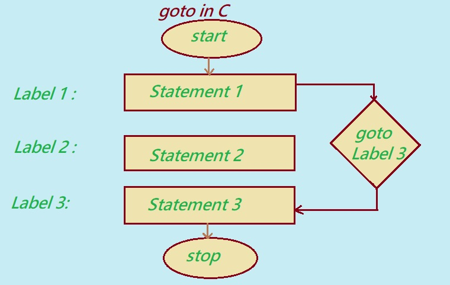

goto statement: In general, the flow of program execution starts from the top and continues to the bottom. However, the programmer can alter this normal flow when needed.
The flow of a program can be changed using the goto statement.
The goto statement in C language is also known as a jump statement. It is used to jump from one part of the program (code) to another. It is often referred to as an unconditional jump statement.
With the help of the goto statement, a programmer can define a block of code with a name (or label), and then use goto to jump to that label from another part of the code.
A programmer can use the goto statement in two ways:
i. Transferring control from the top to a block below in the code
ii. Transferring control from the bottom back to a block above in the code
Before learning how the goto statement is used, let's first understand its advantages, disadvantages and how it works in C programming.
Understanding the goto Statement in C Programming
Advantage using goto statement in C programming
Following are some advantages of using the goto statement in C programming:
• The goto statement can be used to create loops in a program without using traditional loop structures like while, do...while or for.
• As a jump statement, goto allows the programmer to transfer control to any part of the code — either above or below the current execution point.
• It can be used to skip certain lines of code when a specific condition is met, and move control to another part of the program.
•The goto statement is especially useful for breaking out of deeply nested loops. Instead of using multiple break statements, a single goto can exit all loops at once.
Disadvantage using goto statement in C programming
Following are some of Disadvantage using goto statement in C programming.
• Using goto can make your program harder to follow and understand, which is why many programmers try to avoid it.
• It often makes the code messy, confusing and tough to read or fix later.
• When goto is used too much, it becomes difficult to make changes to the program without breaking something.
• It can be really tricky to figure out how the program flows from one part to another, especially in large or complex code.

The diagram below shows a flowchart that helps explain how the goto statement works in C programming.
The goto statement is used to jump from one part of the code to another. That’s why it’s called a jump statement — it lets the program skip over lines or jump back to earlier ones based on how it’s written.
This is done using a label, which is like a marker in your code. When the program comes across a goto statement, it jumps to the line with the matching label, and starts executing from there. The label can be placed either before or after the goto, but it must exist somewhere in the code.
In the flowchart there are three labels and three statements. After executing statement 1, the program hits the goto label3 statement. This causes it to skip statement 2 and jump directly to label 3, where it executes statement 3.
Syntax of go to statement in C
Syntax 1. Transfering the Control from top to down or below in the code
//code
goto label-name;
statement-1
statement-2
label-name:
statement-3
statement-4
Explanation:
The syntax of the goto statement can be broken down into two parts:
1.goto label_name;
2.label_name:
1. goto label_name; (Transfer Control)
The goto statement is used to jump to a specific part of the program marked by a label.
In the example above, when the program reaches the goto statement, it jumps directly to the line with the label label_name:. In this case, the label is placed below the goto, so the program skips over the lines in between and continues execution from the label onward.
Syntax 2. Transfering the Control from down to top
//code
label-name:
statement-1
statement-2
if(condition)
goto label-name;
statement-3
statement-4
Explanation:
When the program reaches the goto statement, it immediately jumps to the label label-name:. In this example, the label is defined above the goto statement, so statement1 and statement2 will run normally until the condition in the if statement is true. If the condition is false, the program continues executing the rest of the code after the goto.
First way to use goto statement in C programming language.
i. skip some lines and move to a block below in the code.
/* C program to check if a given number is
even or using goto statement */
#include <stdio.h>
int main()
{
int n ;
printf("\n Enter Any Number");
scanf("%d",&n);
if (n % 2 == 0)
/* transfer control to the label named even_n*/
goto even_n;
else
// jump to label odd_n
goto odd_n;
even_n:
printf("%d is even number", n);
// return if even
return;
odd_n:
printf("%d is odd number", n);
return 0;
}
Output:
Enter Any Number
7
7 is odd number.
Explanation about the Program – Check Even or Odd Using goto in C.
This program in C enables us to check if a number is even or odd using a very simple goto statement. Although we do not usually recommend using goto for real-world coding, it is the best way by which learning how control jumps in a program becomes easy. Now, let's break it down stepwise.
Step 1: Start With a Number
int n;
pritnf("\n Enter Any Number");
scanf("%d", &n);
Before anything else, the program is supposed to ask the user to enter a number. That number will then be put into the variable n.
For example, if you enter 7, then n=7.
Step 2: Check Whether Even or Odd
if (n % 2 == 0)
goto even_n;
else
goto odd_n; This checks whether the given number is leaving a remainder.
If 0 is the remainder when the number divides by 2(n % 2 == 0), then the number is even and it will jump to even_n.
Otherwise goes odd_n.
Consider for example n = 7, 7 % 2 = 1, which is not equal to zero, thus it goes to odd_n.
Step 3: Print Result
If there is an even number:
even_n: printf("%d is even number", n); return;
It prints "4 is even number" if you entered 4 and then goes to end the program.
If there is an odd number:
odd_n: printf("%d is odd number", n);
It prints "7 is odd number" and continue further.
Example Result
Enter Any Number 7
7 is an odd number
Summary : This program gives a clear picture of jumping between labels in C using goto. Although modern programming hardly uses it, this example can help us understand how programs can be redirected on the base of some conditions.
Second way to use goto statement in C programming language.
ii.repeat some lines of code by going above in the code.
/* C program to print numbers from 1 to 10 using goto statement */
#include <stdio.h>
int main()
{
int n = 1;
label:
printf("%d ", n);
n++;
if (n <= 10)
goto label;
return 0;
}
Output:
1 2 3 4 5 6 7 8 9 10
Explanation:
We begin by setting n = 1. That’s the first number we want to show.
Then comes a label called label: — it’s just a spot in the code where we can jump back if needed. The program reaches this label and prints the current value of n. So at first, it prints 1.
Right after that, we increase n by 1. Now, n becomes 2.
Next, the program checks the condition if (n <= 10). This simply asks: Is the number still 10 or less?
If yes, the program jumps back to the label and repeats the same steps — printing the new value of n and increasing it again.
This process continues: 3, 4, 5... until n becomes 11.
At that point, the condition n <= 10 is no longer true. So, the program skips the goto and moves to the end, where it exits and stops running.
Previous Topic:-->> Intro to loops in C || Next topic:-->>do..while loop in C.
Other Topics
SQL Interview Questions Java Control Flow and Loops Interview Questions Top SQL Interview Questions Python Loops Interview Questions Banking Case Study in SQL